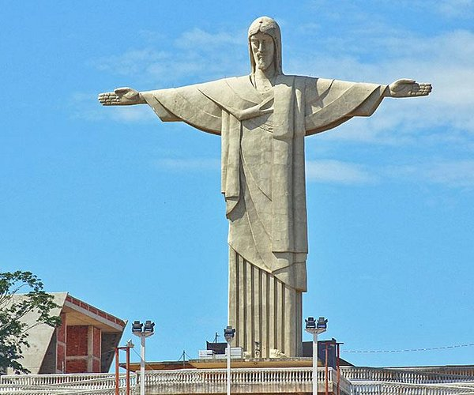

Cristo Redentor

El Cristo Redentor o Cristo del Corcovado (en portugués:
Cristo do Corcovado) es una estatua art déco que representa a
Jesús de Nazaret, con los brazos abiertos, mostrando a la
ciudad de Río de Janeiro, Brasil.